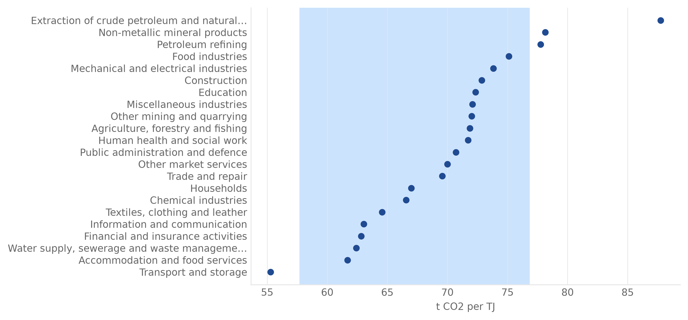
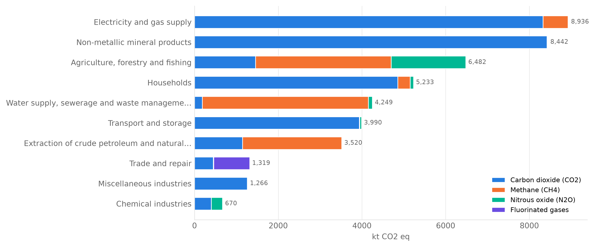
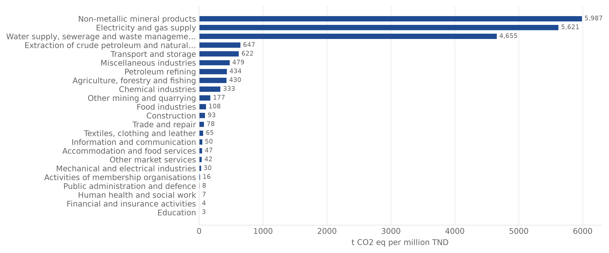

What this presentation covers
- The conversion matrix and where Tunisia departs from the default.
- The residence adjustment and the bridge table.
- Checks against the energy accounts, first results and dissemination.
Conversion matrix, OECD adjustments, bridge table and first results
| Category | kt CO2 eq | Default | Tunisia | Activities |
|---|---|---|---|---|
| 1.A.3.b.i | 4,272 | H | HH | key: Road |
| 1.A.4.b.ii | 2,647 | F | HH | HH |
| 1.A.3.b.ii | 1,885 | H | HH | key: Road |
| 1.A.3.b.iii | 1,349 | H | HH | key: Road |
| 2.F.1.a | 863 | C | Other | 45 |
| 1.A.1.c.i | 792 | C | B | 06 |
| 1.A.4.a.i | 765 | F | Other | key: Commercial and public services |
| 1.B.2.b.iv | 495 | H | D | 35 |
| kt CO2 | |
|---|---|
| Resident airlines abroad (OECD) | 564 |
| Aviation bunkers in the inventory | 657 |
| Resident vessels (OECD) | 546 |
| Marine bunkers in the inventory | 24 |
The OECD maritime estimate is much larger than marine bunkers, and missing before 2019.
| Item | 2019 | 2020 | 2021 | 2022 |
|---|---|---|---|---|
| Air emissions accounts (resident units) | 46,158 | 43,690 | 47,213 | 46,921 |
| Less: air transport of residents abroad | 745 | 246 | 288 | 564 |
| Less: water transport of residents abroad | 498 | 502 | 540 | 546 |
| Plus: air transport of non-residents on the territory | 4 | 0 | 0 | 0 |
| Plus: water transport of non-residents on the territory | 0 | 0 | 0 | 0 |
| Other adjustments | 0 | −1 | −4 | 0 |
| National inventory excluding LULUCF | 44,919 | 42,941 | 46,381 | 45,812 |
| Land use, land-use change and forestry (LULUCF) | −10,564 | −10,563 | −10,500 | −10,784 |
| National inventory including LULUCF | 34,354 | 32,378 | 35,881 | 35,028 |



A few industries emit far more per dinar than the rest; changes in their output or technology matter most.
Energy and emissions accounts for Tunisia